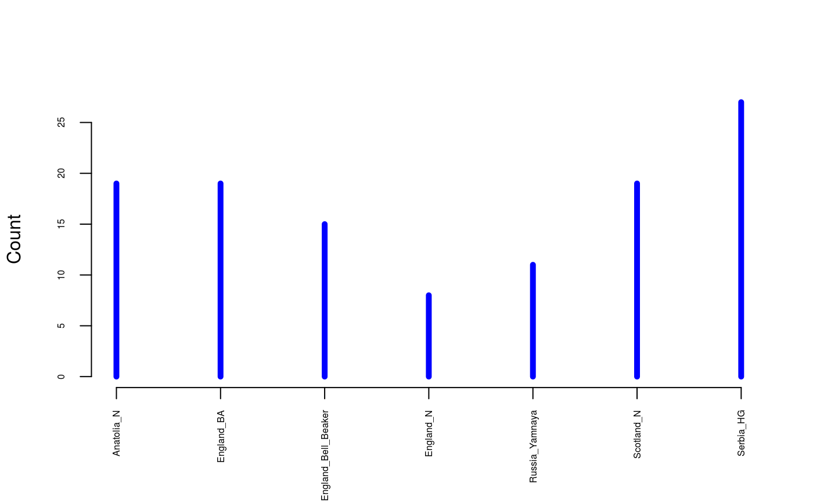
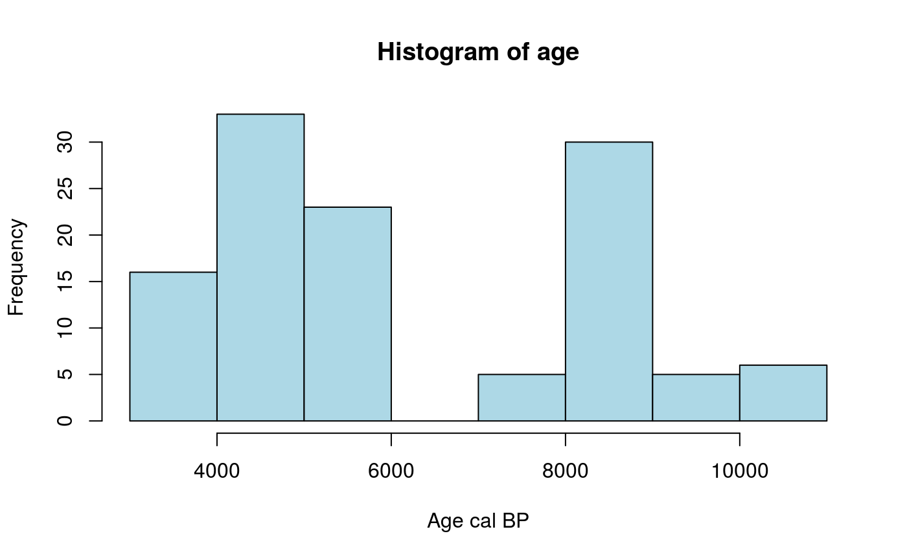
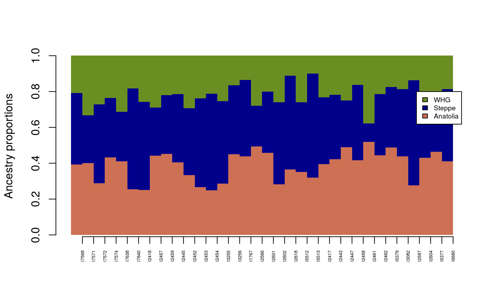
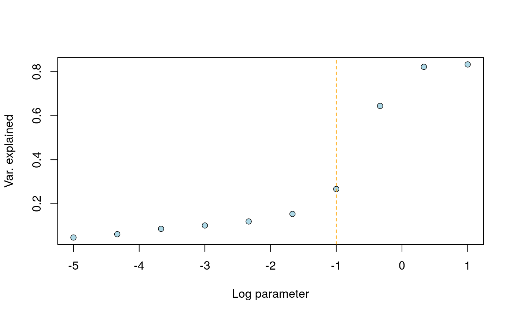

tfa-vignette.RmdSummary: The R package tfa implements a factor analysis (FA) algorithm for temporal DNA or ancient DNA (aDNA) samples, ajusting individual scores for the effect of allele frequency drift through time. Similarly to PCA, tfa projects individuals into a lower dimensional space allowing a visual investigation of population structure corrected for temporal drift. Based on the adjusted factors, the program can estimate ancestry proportions for a target population or a subset of target individuals given specified source populations. This vignette illustrates the use of tfa with samples of Eurasian aDNA extracted from David Reich’s lab database.
library(tfa)
The FA model uses a decomposition of the data matrix into a product of factor and loading matrices plus correction factors and residual noise. The correction factors represented the main improvement over classical FA or principal component analysis (PCA). In tfa the correction factors are related to the covariance function of the stochastic drift process. The default model for the covariance function is the Brownian model. This default corresponds to the diffusion approximation of allele frequency drift in a random mating population conditional on the non-fixation of alleles in the population. The approach is flexible and allows expert users to customize their own model and implement other covariance functions. The correction factors are obtained after a spectral decomposition of the covariance matrix, and the corresponding effect size estimates are obtained in a Bayesian framework. Explicit solutions are obtained for the effect size estimates and corrected factors. The hyperparameters for the FA model are the drift parameter and the number of latent factors.
This section will illustrate the use of the tfa function to display a geometric representation of 118 aDNA samples from prehistoric Eurasia. This example data set was extracted from a database available from David Reich’s lab considering individuals from Neolithic and Bronze Age Great Britain, Steppe (Yamnaya), Anatolia (Early Farmers), and from Serbia (Western Hunter-Gatherers).
Ten thousands SNP genotypes were filtered for high-quality, relatively high coverage and low number of missing values. Individual metadata and sample ages are provided as separate objects. The ages were defined by the averages of 95.4% date range in calBP provided with the database. The command below shows how to load the data in the R environment and which groups have been included in the data set.
data(england_ba) # Ancient DNA from Bronze Age Great Britain samples # including Yamnaya, early farmers (Anatolia) and hunter-gatherers (Serbia) genotype <- England_BA$genotype meta <- England_BA$meta age <- England_BA$age

Prehistoric dates for each sample are provided in years cal BP.
hist(age, col = "lightblue", xlab = "Age cal BP")

The data set contains no missing genotypes. The missing values were imputed from a much larger database. This was done in a preliminary analysis by using a completion algorithm implemented in the impute function of the R package LEA.
Running a standard PCA on the data matrix shows there are at least two or three main axes of variation in the genotypic data.
A first step of analysis consists of adjusting the genotypic data for coverage. For those particular filtered genotypes, the impact of coverage bias on analyses is not substantial. In general however, coverage may strongly bias the results of factor analyses, and it is important to consider adjusting for it. To adjust for coverage, the tfa package contains the function coverage_adjust() which implements a correction based on a latent factor regression model. According to the PCA result, four factors could be used in the latent factor regression model. Note that it is better to choose more factors than the number of PC axes estimated from the original data.
coverage <- meta$Coverage geno <- coverage_adjust(genotype, coverage, K = 4, log = TRUE)
For performing FA of the adjusted data matrix (geno), the number of factors (k), and the drift parameter (lambda) must be specified.
The number of factors could be determined by PCA or other methods for analysis of population structure. We suggest k could be taken equal to the number of main axes in the PCA of the adjusted matrix plus one. Since the tfa() approach is based a low-rank approximation of the data matrix, a lower value such as k = 3 or k = 2 could be useful. The value k = 3 will explore relationships of samples when three ancestral populations are present in the dataset. The value k = 2 will explore relationships of samples when two ancestral populations are present in the dataset.
The drift parameter (lambda) can be determined by a grid search procedure. The function choose_lambda() is provided to facilitate the search and repeat tfa analysis with multiple values of lambda (see tutorial section below). In the current example, we selected the value for which the effect of age was removed from the third factor (third column of mod$u).
mod <- tfa(Y = geno, sample_ages = age, k = 3, lambda = 5e-1)
The object mod contains k factors adjusted for temporal drift in allele frequency. The results are contained in argument mod$u. The argument mod$sing contains the singular value (standard deviation) associated with each factor.
k <- ncol(mod$u) var_explained <- mod$singular.values[1:k]^2/(sum(mod$singular.values^2)) round(var_explained, 3) #> [1] 0.539 0.284 0.176
The object mod$u can be used to visualize the samples in the space defined by the first axes. The result looks like a PC plot showing the relative positions of Great Britain samples with respect to their putative sources of ancestry.
plot(mod$u, pch = 19, cex = 2, col = "grey90", xlab = "Factor 1", ylab = "Factor 2") center_yamnaya <- apply(mod$u[meta$Group.ID == "Russia_Yamnaya",], 2, mean) center_anatolia <- apply(mod$u[meta$Group.ID == "Anatolia_N",], 2, mean) center_hg <- apply(mod$u[meta$Group.ID == "Serbia_HG",], 2, mean) lines(rbind(center_yamnaya, center_anatolia, center_hg, center_yamnaya)) points(mod$u[meta$Group.ID == "Russia_Yamnaya",], pch = 8, cex = .6, col = "darkblue") points(mod$u[meta$Group.ID == "Anatolia_N",], pch = 8, cex = .6, col = "salmon3") points(mod$u[meta$Group.ID == "Serbia_HG",], pch = 8, cex = .6, col = "olivedrab") points(mod$u[meta$Group.ID == "England_Bell_Beaker",], pch = 19, cex = .6, col = "yellow4") points(mod$u[meta$Group.ID == "England_BA",], pch = 19, cex = .6, col = "yellow3") points(mod$u[meta$Group.ID %in% c("England_N", "Scotland_N"),], pch = 19, cex = .6, col = "salmon1") legend(x = 20, y = -15, cex = .6, legend = c("Early Farmers", "Hunter Gatherers", "Steppe"), col = c("salmon3", "olivedrab", "darkblue"), pch = 8) legend(x = 10, y = -15, cex = .6, legend = c("Neolithic GB", "Bronze Age GB", "Bell Beaker"), col = c("salmon1", "yellow3", "yellow4"), pch = 19)
In addition to geometric representations, the R package tfa can provide estimates of ancestry proportions for a target population or for a list of target individuals given a list of source populations. The number of sources must be less or equal than the number of factors plus one (i.e. k+1). For this analysis, the metadata object must contain a column named Instance.ID indicating the ID of each individual and another column named Group.ID indicating the group ID of each individual in the study.
colnames(meta) #> [1] "Instance.ID" "Group.ID" "Country" "Coverage"
Since the data.frame meta contains the correct information, it can be converted into an object of class tfa_metadata.
metadata <- as.tfa_metadata(meta)
Now consider England_Bell_Beaker and England_BA as target populations and Anatolia_N (Early Farmers), Russia_Yamnaya (Steppe Pastoralists), Serbia_HG (Western Hunter-Gatherers) as potential source populations.
target = c("England_Bell_Beaker", "England_BA") source = c("Anatolia_N", "Russia_Yamnaya", "Serbia_HG")
The function ancestry_coefficients uses basic linear algebra to compute the coordinates of each target population in the system formed by the centers of source populations.
ancestry_coefficients(model = mod, metadata = metadata, source = source, target = target) #> Anatolia_N Russia_Yamnaya Serbia_HG #> England_Bell_Beaker 0.3542780 0.3996619 0.2460601 #> England_BA 0.4159021 0.3742463 0.2098515
The Bell Beaker samples share a large fraction of their ancestry with steppe pastoralists. Changing the Anatolian population for another population of Early Farmers (England_N) can confirm this result.
ancestry_coefficients(model = mod, metadata = metadata, source = c("England_N", "Russia_Yamnaya", "Serbia_HG"), target = target) #> England_N Russia_Yamnaya Serbia_HG #> England_Bell_Beaker 0.3458747 0.5497641 0.10436118 #> England_BA 0.4060372 0.5504578 0.04350508
The result shows that the amount of ancestry shared with the hunter-gatherers reduces when farmers are sampled from a closer geographic source. This suggests that the hunter-gatherer contribution to the England Neolithic gene pool may be substantial. To check this hypothesis, consider England_N as the target with the set of sources considered at the start.
ancestry_coefficients(model = mod, metadata = metadata, source = c("Anatolia_N", "Russia_Yamnaya", "Serbia_HG"), target = "England_N") #> Warning in ancestry_coefficients(model = mod, metadata = metadata, source #> = c("Anatolia_N", : A negative ancestry coefficient might suggest that #> at least one source did not contribute to the gene pool of at least one #> targeted population. For this target relaunch ancestry_coefficients() after #> removing the superfluous source from the input vector. #> Anatolia_N Russia_Yamnaya Serbia_HG #> England_N 1.024296 -0.4339785 0.4096828
A negative value for the Russia_Yamnaya source suggests that this source did not contribute to the gene pool of Neolithic England samples, and that it should be removed from the set of sources.
ancestry_coefficients(model = mod, metadata = metadata, source = c("Anatolia_N", "Serbia_HG"), target = "England_N") #> Anatolia_N Serbia_HG #> England_N 0.7555439 0.2444561
After doing this, the result indeed suggests a substantial contribution of hunter-gatherers to Neolithic England farmers. The analysis can be summarized in a table of ancestry coefficients as follows.
ancestry.B <- ancestry_coefficients(model = mod, metadata = metadata, source = c("Serbia_HG", "Anatolia_N", "Russia_Yamnaya"), target = c("England_Bell_Beaker", "England_BA")) ancestry.N <- ancestry_coefficients(model = mod, metadata = metadata, source = c("Serbia_HG", "Anatolia_N"), target = c("England_N", "Scotland_N")) ancestry.N <- cbind(ancestry.N, c(0,0)) ancestry <- rbind(ancestry.B, ancestry.N) ancestry #> Serbia_HG Anatolia_N Russia_Yamnaya #> England_Bell_Beaker 0.2460601 0.3542780 0.3996619 #> England_BA 0.2098515 0.4159021 0.3742463 #> England_N 0.2444561 0.7555439 0.0000000 #> Scotland_N 0.2566750 0.7433250 0.0000000
The results can be represented by a barplot as follows. The green, salmon and blue colors correspond to hunter-gatherers, early farmers and steppe pastoralists respectively.
Since FA is an individual-based method, a geometric approach can be used to compute ancestry coefficients for each individual, and to display results looking like a popular STRUCTURE barplot. For Bronze Age and Bell Beaker samples, this can be done as follows.
source = c("Anatolia_N", "Russia_Yamnaya", "Serbia_HG") target = c("England_Bell_Beaker", "England_BA") Q_matrix <- ancestry_coefficients(model = mod, metadata = metadata, source = source, target = target, individual = TRUE) barplot(t(Q_matrix), border = NA, space = 0, axisnames = FALSE, col = c("salmon3", "darkblue", "olivedrab"), legend.text = c("Anatolia", "Steppe", "WHG"), args.legend = list(y = 0.8, cex = .6), ylab = "Ancestry proportions") axis(1, at = 1:nrow(Q_matrix), labels = rownames(Q_matrix), las = 3, cex.axis = .4)

The levels of ancestry are consistent across the samples from Bell Beaker and Bronze Age samples.
The drift parameter (lambda) can be determined by a grid search procedure. We suggest to choose this parameter by using a simple heuristic requiring tfa() to be run multiple times. Let us consider a case with \(k = 2\) source populations, for example with early farmers from Anatolia and Yamnaya herders from the Pontic steppe.
# Ancient DNA from Bronze Age Great Britain samples # To keep k = 2 ancestral populations # Remove hunter-gatherers from the data age2 <- age[meta$Group.ID != "Serbia_HG"] geno2 <- geno[meta$Group.ID != "Serbia_HG",] # Run a preliminary FA model with k = 2 # The preliminary lambda value does not matter mod <- tfa(age2, geno2, k = 2, lambda = 5e-2, center = TRUE)
We want to choose a value of lambda for which dependency on time is removed from the second factor. To this objective, we use a grid of values in the function choose_lambda().
r_2 <- choose_lambda(mod, geno2) abline(v = -1, col = "orange", lty = 2)

The result can be interpreted as the proportion of temporal variance explained by the k factors. Here, the orange line indicates the value for which the effect of age is removed from the second factor of the tfa analysis.
We eventually rerun the main function with the selected value
# Run the final FA model with k = 2 mod <- tfa(age2, geno2, k = 2, lambda = 10**(-1), center = TRUE) # Re-evaluate ancestry coefficients metadata <- as.tfa_metadata(meta[meta$Group.ID != "Serbia_HG",]) ancestry_coefficients(model = mod, metadata = metadata, source = c("Anatolia_N", "Russia_Yamnaya"), target = "England_Bell_Beaker") #> Anatolia_N Russia_Yamnaya #> England_Bell_Beaker 0.4873187 0.5126813
# clear everything # rm(list = ls())